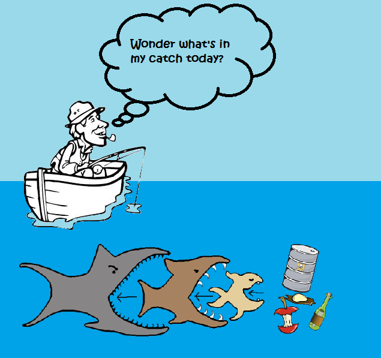

Plastic is a very big production around the world and not all the production of plastic is being recycled. Only 9 percent of plastics that are produced tend to get recycled. This means that less than a tenth of all plastics around the world gets reprocessed. Since not all plastics get recycled, people get rid of leftover plastics by burning them. In addition, people burn plastics because they believe it to be a better option than letting plastics pile up in landfills.

While the burning of plastic may seem like a smart thing to do, what some people don’t understand is that burning plastic releases chemicals like dioxin and furan gases into the environment . Dioxin and furan gases are often fatal to humans who are frequently exposed to these gases Not only so, but these gases also end up affecting our environment.Burning plastic can cause pollution to our surroundings, which leads to damage within the ozone layer. Additionally, high exposures to dioxin gas in short instances can result in skin lesions and altered liver function. Consequently, long term exposure is linked to impairment of the immune system, the developing nervous system, the endocrine system, and the reproductive functions. If dioxin is inhaled, it can instantly cause coughing, shortness of breath, and dizziness within humans.
Another way to convert waste to energy is through gasification. This is known as a process that melts plastics at very high temperatures in the near-absence of oxygen. What this means is that toxins like dioxins and furans aren’t able to form. People tend to burn plastic because that’s the only way some see to get rid of the plastic and their waste.
People are burning plastic as a source of energy for cooking because not everyone has the right source of energy to cook food. Some people burn plastics to produce heat and plastic is a renewable fuel. Some scientist have tried different ways to see how burning plastic can be a good thing so adding a extra simple step to burning plastic can allowing for burning plastics into a fuel that burns just as cleanly as natural gas.